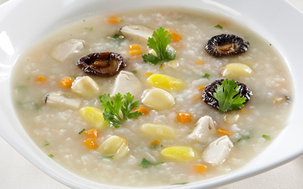

Chi Tiết Sản Phẩm
Cháo Tim Gà
Cháo tim gà rau cải là một món ăn khá ngon và giàu chất dinh dưỡng với tim gà giòn giòn, mềm mềm dai dai ăn không bị ngán cùng cháo thơm, đậm hương vị của nước dùng gà, rau cải mềm, ngọt nước. Tất cả các nguyên liệu hòa quyện với nhau tạo nên một món ăn thơm ngon, hấp dẫn người thưởng thức từ màu sắc cho đến hương vị. Món ăn này rất thích hợp cho những ngày tiết trời se lạnh như thế này hay đơn giản là bát cháo ngon để thay đổi bữa ăn với những món quen thuộc. Món ăn này sẽ khiến gia đình bạn thích mê khi thưởng thức đấy. Hãy vào bếp cùng sổ tay nấu ăn để học cách làm món ngon này nhé!